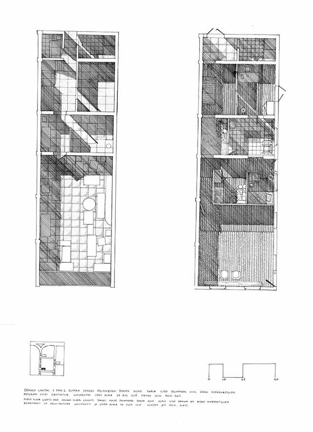

As a 800 years old city does not have many heritage building on list except a couple from pre-and post-Islamic Kingdom, some from colonial era, and Tsunami time. Acehnese traditional houses (Rumoh Aceh), Chinese shophouses in Peunayong, jengki houses are amongst endangered buildings, but they reflect the resilience of Acehnese against wars and disasters. These buildings have been replaced with modern buildings. Therefore, documentation of survived buildings of different eras is imperative because they are amongst remaining evidences of the greatness of Acehnese past and contribute to sense of resilience from trauma. For example, Acehnese houses are example of how local tradition adapts with environment and disaster threats.
The research conducted under Vernacular Knowledge Research Group (VKRG) and the MoU will be signed on 7 July 2017 at Australian Embassy, Jakarta. The partners under VKRG umbrella are expanded. University of South Australia, University of Indonesia, and Syiah Kuala University, invite also the Association of Siamese Architects-VERNADOC, University of Udayana, and the Oral Traditions Association to join the group. Under this collaboration, the lecturers of Syiah Kuala University gain national and international recognition, increasing citation index through publication at International recognized journals, and extending the network internationally. In addition, this research will provide international working experience for involving students of Syiah Kuala University and mobility students from and to partner countries Australia, Indonesia, and Thailand.
Using Vernadoc Method a building is measure and re-drawing in scale and details. In 2017, this research will document Rumoh Aceh and followed by shophouses in Peunayong and jengki houses in 2018. In 2019, it will document timber houses and Indrapuri mosque. Vernadoc survey will be undertaken for 2 weeks, one week for the measuring and basic drawing, and one week for finishing of the drawings in ink. Vernadoc method is a method invited in Finland and recently widely used as method for detail inventory of heritage buildings. There are several advantages of using this method: